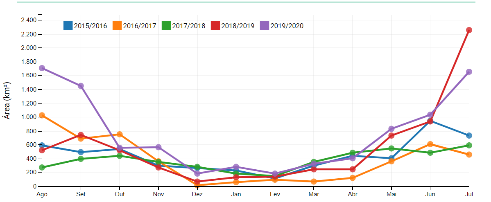

⚠ Níveis de desmatação estão alarmantes ⚠
A destruição da floresta amazônica segue em ritmo acelerado no Brasil, números apontem aumento de até 34% comparado a anos anteriores!
Que a amazônia está sendo constantemente desmatada não é novidade, mas ao olhar os números, a situação passa de assustadora para inacreditável!
Segue abaixo dados do projeto DETER:

“O governo segue implementado sua política de desmantelamento das políticas ambientais e o resultado prático disso é o desmatamento da Amazônia”, resume Paulo Artaxo, professor titular do Instituto de Física da USP, que há décadas desenvolve pesquisas na região amazônica. “Basicamente é isso; não tem muito segredo, não.”
Apesar que os governos do Brasil e do mundo falam que se preocupam com o meio ambiente,os números de emissão de gás carbônico e aumento do efeito estufa dizem o contrário, precisamos divulgar esse dados, pois a ameaça da mudança climática e ambiental não é só coisa de filme pós-apocalíptico, é uma ameaça real!